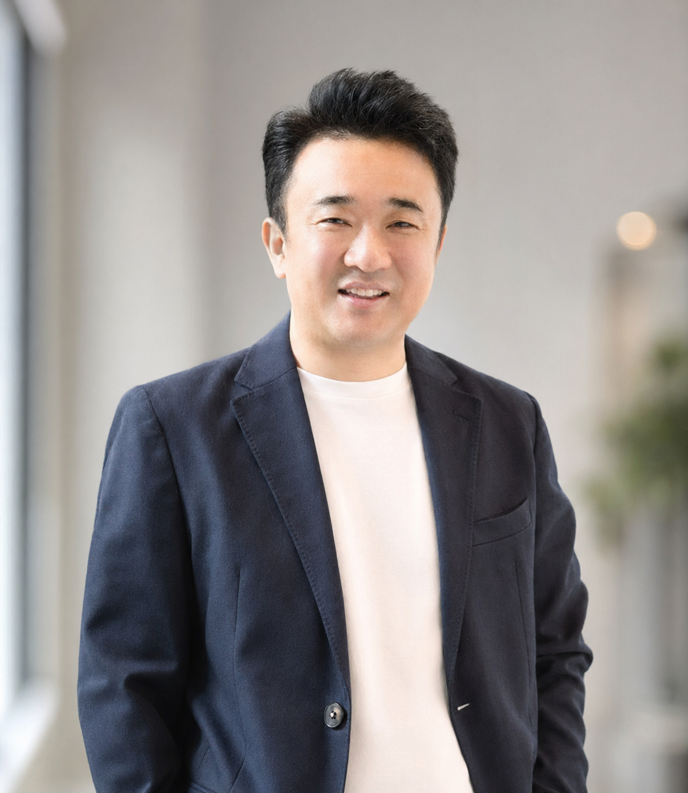

Business Build
SaaS / DX / Generative AI / Venture Building
技術と事業をつなぎ、 新しい市場をつくる。
湯浅 重数。通信インフラ、クラウド、SaaS、DX、生成AIまで、 35年以上にわたり変革期のど真ん中で事業を立ち上げてきた ビジネス・テクノロジーリーダーです。
- 35+Years in Tech
- 3,100保育施設導入
- 12億円年商規模へ成長
- 500万+大規模基盤構築

Current Focus
AI Agent / GenAI SaaS
Leadership
事業立ち上げ / CTO / 組織構築
Cross Functional
企画・開発・営業・CSを横断推進
Scale
大企業基盤からスタートアップまで実行
About
変革フェーズに強い、事業創出型リーダー
通信インフラ黎明期から、Yahoo! BB / ソフトバンク光の大規模ネットワーク、 法人向けクラウド、保育DX SaaS、産廃業界向けDX、そして現在のAIエージェントまで、 時代ごとの技術転換点で「事業として成立させる」役割を担ってきました。
強みは、経営の視点と技術の解像度を両立しながら、課題定義、アーキテクチャ設計、 プロダクト開発、事業推進、組織づくりまで一気通貫で進められることです。
Venture Design
市場仮説づくり、事業企画、商品設計、アライアンス、収益モデル設計。
Technology Leadership
クラウド、SaaS、IoT、生成AI、AIエージェント領域の設計と実装推進。
Scale Execution
大手企業の複雑な現場とスタートアップの速度感を両方理解して動けます。
Selected Projects
代表的な事業・プロダクト実績
Founder / CEO
hugmo
ソフトバンク発の社内ベンチャーとして保育DX SaaSを創業。 企画・開発・事業展開を主導し、4年間で3,100施設・15万人規模へ成長。
- BabyTech Award Japan 安全対策大賞を2年連続受賞
- JPホールディングス、ポピンズなど業界大手との提携を実現
- 学研教育みらいへの事業譲渡を実現
Vice President / CTO
DXE Station
産業廃棄物業界向けDX SaaSを立ち上げ。事業企画、システム設計、 セキュリティ、マーケティング、CSまで統括。
- マッキンゼー・AREホールディングスとのDXプロジェクトから事業化
- 2024年12月時点で130社導入
- 約30名規模の組織を率いて推進
General Manager
ビジュアモール
ソフトバンクで法人向けクラウドサービスをゼロから立ち上げ、 8年間で500社・20万人ユーザー、年商12億円規模へ成長。
- ANA、JAL、JR東日本、JR東海、資生堂などへ導入
- 営業、企画、マーケティング、CSを横断統括
- 新規事業責任者として収益化まで牽引
Network Leadership
Yahoo! BB / SoftBank 光
ADSL 500万ユーザー、光80万ユーザー規模のアクセスネットワーク設計・構築を統括。 通信品質改善でソフトバンク社長賞を受賞。
- 大規模ネットワークの設計・運用・標準化活動を推進
- 約100名規模の組織マネジメント
- 通信インフラの実装力と事業スケール経験を獲得
Capabilities
新規事業開発に必要な領域を、分断せずに扱う。
Career Timeline
キャリアの流れ
Freelance
AIエージェントおよび生成AIを活用したSaaSの企画・設計・開発支援。
DXE株式会社 / 副社長兼CTO
産廃業界向けDX SaaS「DXE Station」を事業企画から推進。
株式会社hugmo / 代表取締役社長
保育クラウドサービスを創業し、導入拡大と事業譲渡を実現。
ソフトバンク株式会社
ネットワーク技術責任者から統括部長まで、通信基盤と法人クラウド事業を牽引。
ノーテル / xpeed networks / アッカ・ネットワークス
通信インフラとDSL機器開発、標準化、シリコンバレーでの研究開発に従事。
Education & Credentials
東海大学 工学部 通信工学科卒
生成AIパスポート / 第二種電気工事士 / TOEIC 710 / ソフトバンクアカデミア第1期生
What I Value
価値を残す事業に、長期でコミットする。
報酬条件だけでなく、企業の持続的成長や社会的意義に本気で向き合える環境を重視しています。
Contact
事業開発、CTO、AI活用推進のご相談を歓迎します。
立ち上げフェーズの壁打ちから、プロダクト設計、DX・AI導入の推進まで、 実行に結びつく形でご一緒できます。
メールリンクを設定する
公開前に `your-email@example.com` をご自身の連絡先へ差し替えてください。